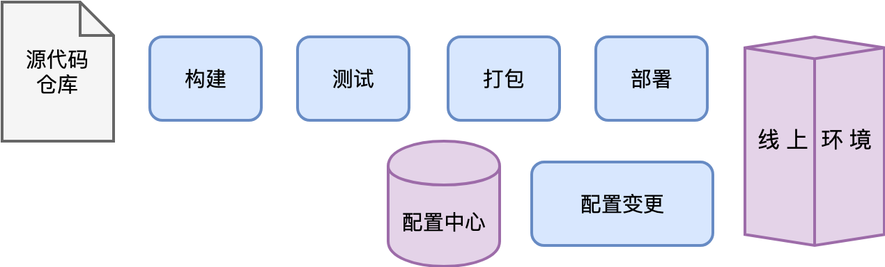

- 00 开篇词 怎样成长为优秀的软件架构师？.md
- 01 架构设计的宏观视角.md
- 02 大厦基石：无生有，有生万物.md
- 03 汇编：编程语言的诞生.md
- 04 编程语言的进化.md
- 05 思考题解读：如何实现可自我迭代的计算机？.md
- 06 操作系统进场.md
- 07 软件运行机制及内存管理.md
- 08 操作系统内核与编程接口.md
- 09 外存管理与文件系统.md
- 10 输入和输出设备：交互的演进.md
- 11 多任务：进程、线程与协程.md
- 12 进程内协同：同步、互斥与通讯.md
- 13 进程间的同步互斥、资源共享与通讯.md
- 14 IP 网络：连接世界的桥梁.md
- 15 可编程的互联网世界.md
- 16 安全管理：数字世界的守护.md
- 17 架构：需求分析 (上).md
- 18 架构：需求分析 (下) · 实战案例.md
- 19 基础平台篇：回顾与总结.md
- 20 桌面开发的宏观视角.md
- 21 图形界面程序的框架.md
- 22 桌面程序的架构建议.md
- 23 Web开发：浏览器、小程序与PWA.md
- 24 跨平台与 Web 开发的建议.md
- 25 桌面开发的未来.md
- 26 实战（一）：怎么设计一个“画图”程序？.md
- 27 实战（二）：怎么设计一个“画图”程序？.md
- 28 实战（三）：怎么设计一个“画图”程序？.md
- 29 实战（四）：怎么设计一个“画图”程序？.md
- 30 实战（五）：怎么设计一个“画图”程序？.md
- 31 辅助界面元素的架构设计.md
- 32 架构：系统的概要设计.md
- 33 桌面开发篇：回顾与总结.md
- 34 服务端开发的宏观视角.md
- 35 流量调度与负载均衡.md
- 36 业务状态与存储中间件.md
- 37 键值存储与数据库.md
- 38 文件系统与对象存储.md
- 39 存储与缓存.md
- 40 服务端的业务架构建议.md
- 41 实战（一）：“画图”程序后端实战.md
- 42 实战（二）：“画图”程序后端实战.md
- 43 实战（三）：“画图”程序后端实战.md
- 44 实战（四）：“画图”程序后端实战.md
- 45 架构：怎么做详细设计？.md
- 46 服务端开发篇：回顾与总结.md
- 47 服务治理的宏观视角.md
- 48 事务与工程：什么是工程师思维？.md
- 49 发布、升级与版本管理.md
- 50 日志、监控与报警.md
- 51 故障域与故障预案.md
- 52 故障排查与根因分析.md
- 53 过载保护与容量规划.md
- 54 业务的可支持性与持续运营.md
- 55 云计算、容器革命与服务端的未来.md
- 56 服务治理篇：回顾与总结.md
- 57 心性：架构师的修炼之道.md
- 58 如何判断架构设计的优劣？.md
- 59 少谈点框架，多谈点业务.md
- 60 架构分解：边界，不断重新审视边界.md
- 61 全局性功能的架构设计.md
- 62 重新认识开闭原则 (OCP).md
- 63 接口设计的准则.md
- 64 不断完善的架构范式.md
- 65 架构范式：文本处理.md
- 66 架构老化与重构.md
- 67 架构思维篇：回顾与总结.md
- 68 软件工程的宏观视角.md
- 69 团队的共识管理.md
- 70 怎么写设计文档？.md
- 71 如何阅读别人的代码？.md
- 72 发布单元与版本管理.md
- 73 软件质量管理：单元测试、持续构建与发布.md
- 74 开源、云服务与外包管理.md
- 75 软件版本迭代的规划.md
- 76 软件工程的未来.md
- 77 软件工程篇：回顾与总结.md
- 加餐 如何做HTTP服务的测试？.md
- 加餐 实战：“画图程序” 的整体架构.md
- 加餐 怎么保障发布的效率与质量？.md
- 热点观察 我看Facebook发币（上）：区块链、比特币与Libra币.md
- 热点观察 我看Facebook发币（下）：深入浅出理解 Libra 币.md
- 用户故事 站在更高的视角看架构.md
- 答疑解惑 想当架构师，我需要成为“全才”吗？.md
- 结束语 放下技术人的身段，用极限思维提升架构能力.md
- 课外阅读 从《孙子兵法》看底层的自然法则.md
49 发布、升级与版本管理
49 | 发布、升级与版本管理你好，我是七牛云许式伟。
今天我们探讨服务治理的第一个环节：发布与升级。
在应用开发工程师完成一个版本的迭代后，他们交付的是软件新版本的源代码，这些代码存储在源代码仓库中。
一次正常的发布过程，大体分为这样几个典型的步骤：
- 构建：从源代码仓库检出源代码，编译出对应的目标文件，也就是我们新版本的软件。
- 测试：对新版本的软件进行测试，以确认软件的质量符合期望。
- 打包：将新版本的软件及其执行所需的相关文件，比如配置文件，一起打包并记录相应的版本号。
- 部署：将打包好的新版本更新到线上环境。为了保证线上环境的质量，更新过程往往需要灰度，而不是一步到位直接全面切换到新版本。
当然，并不是所有的升级都是发布新版本的软件。有时候我们仅仅只是进行配置变更，也就是修改线上的配置参数。配置参数可能存在于软件配套的配置文件中，也可能存在于线上的某个配置数据库。
整个发布与升级的过程，大体可以用下图来表示。

从上面我们可以看出，发布是一个具备很强的事务特征的工作，过程很复杂。不仅如此，发布工作的心智负担也很大。所有 SRE 都应该牢牢记住以下这句七字箴言：
变更是故障之源。
我们应该怎么做，才能彻底解决发布与升级的问题？
让我们从 “工程师思维” 的角度，用系统化、产品化的思维来考虑这样一个复杂事务。
我们第一个要回答的问题是：我们的发布哲学是什么？
密闭性与可重复性
为保障服务可靠运行需要可靠的发布流程，我们首先要保证的是发布过程的密闭性与可重复性。
可重复性是我们的核心目标。相同的版本可以反复发布，不应该由此产生什么副作用。只有做到可重复，我们才可以安全地进行升级，或者在发现问题时安全地回滚。
要做到可重复性，就需要保证密闭性。
所谓密闭性（Hermetic），简单说就是环境的完整性。
比如，软件的源代码必须是密闭的，每次通过特定的版本号，检出内容必须是完整的，一致的且可重复的。编译的时候不需要再去任何第三方额外检出外部依赖的源代码。
再比如，从构建过程来说，同样必须确保一致性和可重复性。让两个工程师在两台不同的机器上基于同一个源代码版本构建同一个产品，构建结果应该是相同的。这意味着它不应该受构建机器上安装的第三方类库或者其他软件工具所影响。构建过程需要指定版本的构建工具，包括编译器，同时使用指定版本的依赖库（第三方类库）。编译过程是自包含的，不依赖于编译环境之外的任何其他服务。
从自动化到自服务
发布过程一方面是如此复杂，另一方面却又频繁地被执行。所以单单将发布事务做到单次发布的自动化是远远不够的。
为了应对大规模扩张，每个团队必须能够自给自足。故此，很多公司会成立工程效率团队。工程效率工程师将负责开发工程效率平台，包括发布相关的工具，制定发布的最佳实践。
这样，产品研发团队可以自己掌控和执行自己的发布流程。
每一个团队都可以决定多久或者什么时候来发布产品的新版本。发布过程可以自动化到“基本不需要工程效率工程师干预”的程度。很多项目都是利用自动构建工具和部署工具平台来自动构建、自动发布的。发布过程是真正自动化的，工程师仅仅在发生问题时才会进行干预。
这就是自服务的思想。
在这种配合模式下，团队之间配合有着清晰的边界。工程效率团队为发布平台的效率负责，产品研发团队为产品负责。用工程师土话来说，这叫 “吃自己的狗粮”。
追求速度
以什么样的频率来发布新版本比较好？
我们认为在质量保障，能力满足的前提下，越频繁越好。
可以从两个角度来看版本发布的频率。
其一是市场竞争。产品迭代速度可以看作市场竞争力的体现。尤其是面向用户的软件，发布频率往往需要非常频繁。甚至有的团队会采用一种 “测试通过即发布（Push On Green）” 的发布方式，也就是说，发布所有通过测试的版本。
其二是工程质量。我们认为，频繁的发布可以使得每个版本之间的变更减少。这种方式使得测试、出错的调试和定位工作变得更简单。
所以，无论是从市场竞争还是工程质量管理的角度，我们都鼓励这样的版本发布哲学：
少量发布、频繁发布。
从数据驱动的角度，我们需要监测各种数据，尤其是我们关注的核心指标。例如，我们需要监测发布速度，也就是从代码修改提交到部署，再到生产环境一共需要多长时间。
重视质量，尊重流程
在发布流程中，有很多需要进行质量保障的环节。包括：
- 代码评审（Code Review），批准源代码改动；
- 批准创建新的发布版本，基于源代码仓库的某个版本，以及可能的少量 Bug 修改；
- 批准实际去部署某个发布版本；
- 批准配置修改。
要确保在发布过程中，只有指定的人才能执行指定的操作，而不能随随便便跳过必要的环节进行发布。另外，SRE 需要非常了解某个新发布中包含的所有具体改动，以便在发布出现问题时可以更快地进行在线调试。
这意味着，自动化发布系统需要能够整合并提供每个发布中包含的所有改动的报告，包括但不限于源代码修改的记录、Bug Issue、配置修改等等。
配置管理
配置管理在发布过程中看起来很小，但是它其实是线上不稳定性的重要来源。
配置管理随时间在不停地发展。七牛云早期通过代码仓库来管理线上环节的所有配置。这有非常大的好处，所有的配置变更就如同源代码变更一样，可以被跟踪，也可以进行严格的代码评审。
但随着集群规模的增加，这种方式的弊端也越来越突出。
最大的问题是，配置变更并不完全来源于版本发布。线上故障也会引发配置变更，比如 A 机器由于某种原因要下线，可能需要把服务迁移到 B 机器，这也会引发配置变更。
随着机器数量的增加，线上配置变更就会变得相当频繁。
基于代码仓库做配置变更管理，在应对硬件故障时显得很拙劣。在理想情况下，硬件故障的响应应该是免操作的，不需要 SRE 进行任何操作。
有两个方式可以解决这个问题。
方式一是引入配置中心，把有些高频的配置变更支持做到应用逻辑中去。服务治理中有一个子课题叫 “服务发现”，就是基于这样的思想。
方式二是将配置管理与物理硬件环境彻底进行解耦，这也是数据中心操作系统（DCOS）在做的事情。本质上，你也可以把它理解成是将高频的配置变更支持做到应用逻辑中，只不过这由一个基础平台来实现罢了。
结语
今天我们探讨服务治理的第一个环节：发布与升级。它包括了以下这些子过程：
- 构建；
- 测试；
- 打包；
- 部署；
- 配置变更。
我们并没有探讨具体的发布与升级系统怎么做，虽然业界针对发布的各个环节其实都有蛮多的实作案例。如果你正在评估应该采纳什么样的系统，可以结合我们今天探讨的发布哲学来进行评估。
发布系统非常复杂，有很大的事务工作量。要做到高效的发布能力，工程师思维是关键性的支撑，我们需要坚持以系统化的思维来彻底解决发布问题。
如果你对今天的内容有什么思考与解读，欢迎给我留言，我们一起讨论。下一讲我们聊聊 “日志、监控与报警”。
如果你觉得有所收获，也欢迎把文章分享给你的朋友。感谢你的收听，我们下期再见。
© 2019 - 2023 Liangliang Lee. Powered by gin and hexo-theme-book.